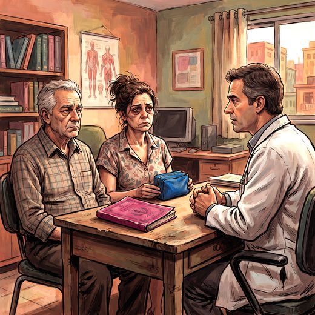

Consulta rápida à beira do leito
Condutas, doses e interações.
Referências da aula · 12
- Ferreira PM, Gomes MC, de Araujo LN, et al. Sociodemographic profile, health conditions, and burden of informal caregivers of older adults in Brazil during the COVID-19 pandemic: cross-sectional, exploratory, noninterventional, descriptive study. JMIR Form Res. 2023;7:e47510. doi:10.2196/47510.DOI
- Gerassi RC, de Andrade LP, Tsen C, et al. Relationship between profile, quality of life and burden of older people with dementia's caregivers during the COVID-19 pandemic. J Cross Cult Gerontol. 2026;41(4). doi:10.1007/s10823-026-09605-9.DOI
- Zarit SH, Reever KE, Bach-Peterson J. Relatives of the impaired elderly: correlates of feelings of burden. Gerontologist. 1980;20(6):649-55.
- Scazufca M. Brazilian version of the Burden Interview scale for the assessment of burden of care in carers of people with mental illnesses. Rev Bras Psiquiatr. 2002;24(1):12-7.
- Elwyn G, Frosch D, Thomson R, et al. Shared decision making: a model for clinical practice. J Gen Intern Med. 2012;27(10):1361-7.
- Sudore RL, Lum HD, You JJ, et al. Defining advance care planning for adults: a consensus definition from a multidisciplinary Delphi panel. J Pain Symptom Manage. 2017;53(5):821-32.
- Belle SH, Burgio L, Burns R, et al. Enhancing the quality of life of dementia caregivers from different ethnic or racial groups: a randomized, controlled trial. Ann Intern Med. 2006;145(10):727-38.
- Pfeffer RI, Kurosaki TT, Harrah CH Jr, Chance JM, Filos S. Measurement of functional activities in older adults in the community. J Gerontol. 1982;37(3):323-9.
- Schulz R, Eden J, editors. Families Caring for an Aging America. Washington (DC): National Academies Press; 2016.
- Livingston G, Huntley J, Liu KY, et al. Dementia prevention, intervention, and care: 2024 report of the Lancet standing Commission. Lancet. 2024;404(10452):572-628.
- Conselho Federal de Medicina. Resolução CFM nº 1.995, de 9 de agosto de 2012. Dispõe sobre as diretivas antecipadas de vontade dos pacientes. Diário Oficial da União; 2012.
- Freitas EV, Py L, organizadores. Tratado de Geriatria e Gerontologia. 5ª ed. Rio de Janeiro: Guanabara Koogan; 2022.
Documentos oficiais
Leis e publicações do Ministério da Saúde sobre o cuidado da pessoa idosa, de acesso livre.
Abrir os documentos